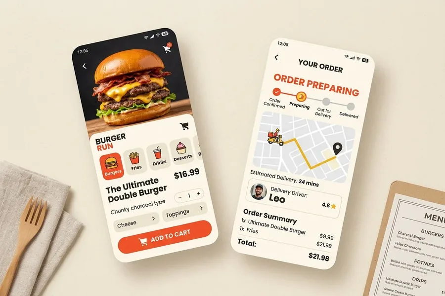

App · 2025
Fast Food App
Two-tap checkout and live delivery tracking built for small screens.

The brief
Orders arrived through three channels and were written on paper. The kitchen found out what to cook from a phone call, and customers called back to ask where their food was.
The constraint
Most orders happen on a mid-range Android phone on mobile data, so the whole flow had to stay under 200 KB per screen and work on a shaky connection.
What I built
- A menu and cart that fit on one thumb-reachable column.
- Checkout reduced to two taps for a returning customer.
- An order status screen with four honest states instead of a fake map.
- Offline handling: the cart survives a dropped connection and retries once.
The result
Placeholder for a real result — orders per week, time per order taken, or calls asking for status.
Building something similar?
Tell me what you have in mind and I will reply within one working day with next steps — scope, timeline and cost.